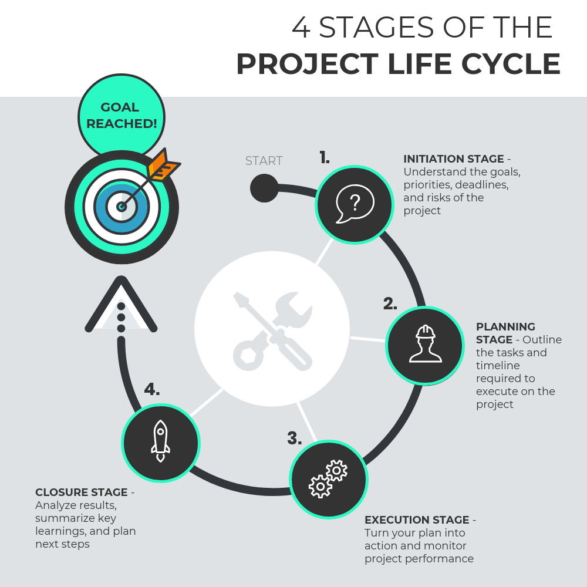

Project life cycle
The Project Life Cycle refers to a series of activities which are necessary to fulfill project goals or objectives.
Projects vary in size and complexity, but, no matter how large or small, all projects can be mapped to the following life cycle structure.
Identification Phase
This is the first stage of project life cycle. It is also known as initiation phase. The initiating processes determine the nature and scope of the project. If this stage is not performed well, it is unlikely that the project will be successful in meeting the business’ needs. The key project controls needed here are an understanding of the business environment and making sure that all necessary controls are incorporated into the project. Any deficiencies should be reported and a recommendation should be made to fix them.
- project proposal (idea behind project, overall goal, duration)
- project scope (project direction and track)
- product breakdown structure (PBS) (a hierarchy of deliverables / outcomes and components thereof)
- work breakdown structure (WBS) (a hierarchy of the work to be done, down to daily tasks)
- responsibility assignment matrix (RACI) (roles and responsibilities aligned to deliverables / outcomes)
- tentative project schedule (milestones, important dates, deadlines)
- analysis of business needs and requirements against measurable goals
- review of the current operations
- financial analysis of the costs and benefits, including a budget
- stakeholder analysis, including users and support personnel for the project
- project charter including costs, tasks, deliverables, and schedules
- SWOT analysis: strengths, weaknesses, opportunities, and threats to the business.
Planning Phase
After the initiation stage, the project is planned to an appropriate level of detail. The main purpose is to plan time, cost, and resources adequately to estimate the work needed and to effectively manage risk during project execution.
Project planning generally consists of
- determining the project management methodology to follow
- developing the scope statement
- selecting the planning team
- identifying deliverables and creating the product and work breakdown structures
- identifying the activities needed to complete those deliverables and networking the activities in their logical sequence
- estimating the resource requirements for the activities
- estimating time and cost for activities
- developing the schedule
- developing the budget
- risk planning
- developing quality assurance measures
- gaining formal approval to begin work.
Implementation, Monitoring and Controlling Phase
During the third phase, the implementation phase, the project plan is put into motion and the work of the project is performed. It is important to maintain control and communicate as needed during implementation. Progress is continuously monitored and appropriate adjustments are made and recorded as variances from the original plan.
In any project, a project manager spends most of the time in this step. During project implementation, people are carrying out the tasks, and progress information is being reported through regular team meetings. The project manager uses this information to maintain control over the direction of the project by comparing the progress reports with the project plan to measure the performance of the project activities and take corrective action as needed. The first course of action should always be to bring the project back on course. If that can not happen, the team should record variations from the original plan and record and publish modifications to the plan. Throughout this step, project sponsors and other key stakeholders should be kept informed of the project’s status according to the agreed-on frequency and format of communication. The plan should be updated and published on a regular basis.
Status reports should always emphasize the anticipated end point in terms of cost, schedule, and quality of deliverables. Each project deliverable produced should be reviewed for quality and measured against the acceptance criteria. Once all of the deliverables have been produced and the customer has accepted the final solution, the project is ready for closure.
Closure Phase
During the final closure, or completion phase, the emphasis is on releasing the final deliverables to the customer, handing over project documentation to the business, terminating supplier contracts, releasing project resources, and communicating the closure of the project to all stakeholders. The last remaining step is to conduct lessons-learned studies to examine what went well and what didn’t. Through this type of analysis, the wisdom of experience is transferred back to the project organization, which will help future project teams.